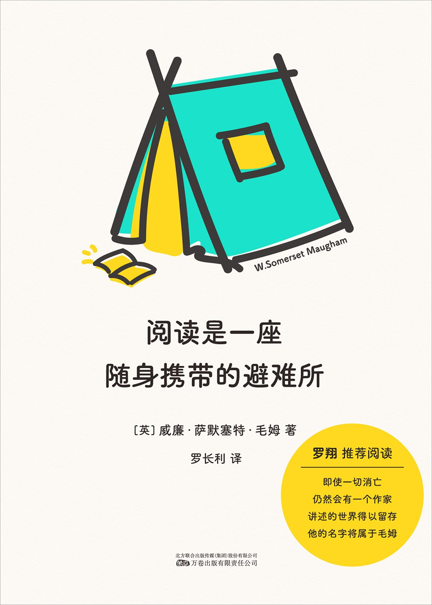
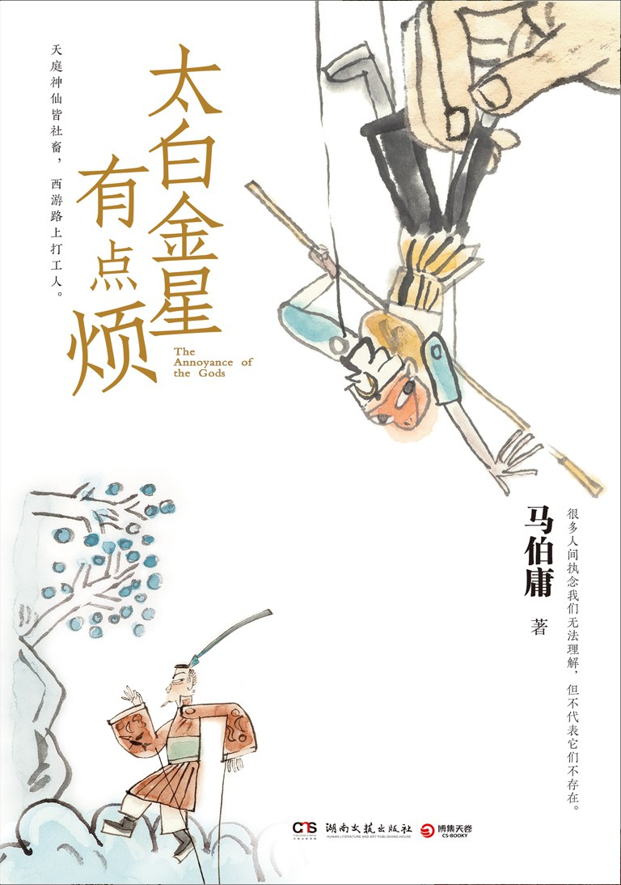

读书应该是一种享受
写 zine 看了不少文章，但是很久没有看书了，前阵子去商场吃饭，路过了西西弗书店，一时兴起买了两本书，毛姆的《阅读是一座随身携带的避难所》以及马伯庸的《太白金星有点烦》。
我是喜欢看书的，最喜欢的是小说，诗歌次之，而一些偏理论的、实用的就不太感兴趣。
一旦开始看一本书，我会想先读完它，再去读别的书，哪怕这本书我可能不太感兴趣，也会强迫自己去读完它，不读完就不会去看别的书。
这样的结果是，当前看的这本书我不太想看，但又要强迫自己看下去，变得很拧巴。
Zine#10::It’s Okay to Abandon Things 中也有类似的感受。
作者的办法是建立一个「远离书架」，允许自己放下当前看的书，让自己在精神上把它放一边。
《阅读是一座随身携带的避难所》中有一篇文章是「读书应该是一种享受」，文章的核心观点就是，你应该去读那些你感兴趣的内容，阅读这件事情应该是一种享受。
有的书虽然别人都说好，但如果你不是享受着去阅读的话，它们只会对你毫无用处。
以后看书还是凭着兴趣，随性而读好了，有兴趣才会主动，而主动才能享受其中。
其实凭着兴趣，就能发现很多有趣的作品，电影，音乐都是如此。有时循着音乐的一句歌词，会发现一部感兴趣的电影，又从电影中发现一本感兴趣的书，凭着兴趣，顺着线索，就能找到很多有趣的内容。
《读书应该是一种享受》摘抄
{kind=link}

我想要指明的第一件事就是阅读应当是享受的。
当然，为了应对考试或学习知识，我们需要阅读许多书，这类阅读中是不存在什么享受的。
我们只是为了获得知识而进行阅读。
唯一能做的便是祈祷因 我们需要它，所以我们不至于在通读它的过程中觉得乏味。
对于这类书，我们是不得已才会去阅读的，而不是乐意去读。
这种阅读不是我心中所指的那种阅读。
我接下来要提到的书籍既不会帮你拿到学位，也不会教你谋生的本事；不会教你如何航船，也不会教你如何修理停运的机器，但是这些书会让你活得更加丰满。
当然，要让这些书籍起到这样的作用，你得享受地沉浸在阅读中。
这类让人在阅读中难以产生阅读兴趣的书我没什么可说的。
每位读者自己都是最好的批判家。
不管学者们对一本书的评价如何，不管他们是多么一致地对一本书盛赞，要是你对这本书不感兴趣的话，你就不必去理会这本书。
但是我想提到的这些书籍的确让我在阅读之后知道了更多东西，如果不是阅读过它们，我想我也不会是今目的我。
所以我请求你，如果你们其中的任何一个人是因为我的推荐才读这些书的，那么我建议你们合上这些书；
如果你不享受着去阅读的话，它们只会对你毫无益处。
没有人必须要去读些诗歌、小说，以及那些被列为「纯文学」的书籍，我们必须带着愉悦去阅读才行。
请不要认为这种愉悦是不道德的。
愉悦本身是好的，它就是纯粹的愉悦，但是某些愉悦有时会带来不好的后果，因而明智的人会主动避开某些愉悦。
愉悦不一定就是肤浅的和满足感官的。
各个时代的智者都已发现，获取知识的快乐是最让人满意的，也是最为持久的。
所以保持阅读习惯是非常好的。
在度过了生命的黄金年华之后，你会发现你能欣然参与的活动已数不多。
除了象棋、填字游戏，几乎没有一种你一个人就能玩起来的游戏。
但是阅读就不一样了，它丝毫不会让你有这种困扰。
没有哪一项活动可以像读书一样 ⸺ 除了针线活，但它并不能平复你焦躁的心情 ⸺ 能随时开始，随便读多久，当有人找你时也可以随时搁下。
没有其他娱乐项目比阅读更省钱了，你在公共图书馆的那些愉快日子和阅读廉价版图书时的愉快体验正好说明了这一点。
培养阅读的习惯能够为你筑造一座避难所，让你逃脱几乎人世间的所有悲哀。
我说「几乎」，是因为我不想夸张地说阅读能缓解饥饿的痛苦，或者平复你单相思的愁闷。
但是一些好的侦探小说和一个热水袋，便能让你不在乎最严重的感冒的不适。
相反，如果有人必须读那些使他觉得无味的书，谁会养成为了阅读而阅读的习惯呢？
《太白金星有点烦》就是一本我读起来比较感兴趣的书，作者从太白金星的角度描述了西游的故事，太白金星负责设计西游的劫难，而随着参与的深入，他窥探到了当年大闹天宫的真相。
书中的太白金星是天庭的高级牛马，周旋于各路神仙、妖魔鬼怪、天庭和灵山之间，里头也是各种人情世故，见人说人话，见鬼说鬼话。
故事叙说的很流畅，打开看之后就忍不住继续往下看，没几天就看完了。
以前还看过他的《长安的荔枝》，也是一口气看完了。
这大概就是兴趣带来的强烈的阅读欲望吧。
阅读应该是愉悦的、享受的，希望今年能多读几本书。
《太白金星有点烦》摘抄
{kind=link}

“那直接接引成佛不好吗？何必非要从大唐走一趟？”
“将帅必起于卒伍，宰相必起于州部。不在红尘洗礼一香，你成佛了也不能服众——佛祖这是用心良苦啊！”
⸺ 第 3 页
这是真正的高手，让你吃个哑巴亏，你还得受着人情。
⸺ 第 23 页
“我都计算好了，五庄观中十八难，难活人参十九难，这就又有两难了嘛。”
观音伸出两个指头，比画了一下，一脸喜色。
这活轻轻松松，好不舒服。
她抬头看看人参果树的青青冠盖，不由得发出感慨：“这么干活多好，大家劲往一处使，不藏着掖着，也不用提防谁。”
“其实单纯干活啊，真不累。累的是，咱们一半的脑子都用在提防自己人上了。”
⸺ 第 115 页
仙界大道三千，其实无外乎看两件事：一是根脚，二是缘法。
⸺ 第 153 页
“说仙界那么重视根脚，为什么不在揭帖里宣扬玄类背景深厚、关系通天？”
“因为这个……总不好拿到台面上来说吧？”
“没错！因为救苦救难、普度众生是正理，能堂堂正正地讲出来。满天神佛无论什么根脚，无论什么心思，至少嘴上都认定这才是大道，台面上只能讲这个，别的只能放在台面之下。”
⸺ 第 160 页
这确实是神乎其技，李长庚喷喷称赞了一阵，突地又涌起一股同情：
“这又有什么意义？桂树原来什么样，还是什么样，有你不多，无你不少。你自以为精通了伐木之技，到头来却连一丝裂隙都留不下来。”
吴刚挠挠头，沉思片刻方道：“好像是没什么意义。不过……”他拎起斧子，“哪个人不是如此？”
他这句看似无意的反诘，却让李长庚之一怔，呆在原地哑口无言。
吴刚见他半天不吭声，自顾自挥动斧子，又叮可咣咣地砍起来。
⸺ 第 185 页
他在启明殿干得最多最熟的活是协调，协调的关键是，不怕你提的要求奇怪，就怕不知你要什么。
只要掌握了各方的真实诉求，东哄哄，西劝劝，怎么都能协调出一个多方都能接受的方案。
⸺ 第 187 页
李长庚在启明殿干了那么久，太熟悉仙界的运作逻辑了，一切不合理的事情背后，都有一个合理的理由，只是你不知道罢了。
⸺ 第 198 页
孙悟空哈哈大笑起来： “金星老儿，你若证不得金仙，就算知道真相，有害无益；等你证了金仙，言出法随，真不真相的也就不甚紧要了 ⸺ 你说你忙活个什么劲？”
李长庚“呃”了一声。
悟空道：“你如此做派，想必还没修到太上忘情的境界吧？我教你个乖：超脱因果，不是不沾因果；太上忘情，不是无情无欲。”
李长庚一怔，这和自己想的好像有点差异，连忙请教。
孙悟空却无意讲解，只是摆了摆手：“莫问莫问，还得你自家领悟才好。不要像我一样，太早想透这个道理，却比渡劫还痛苦呢。”
⸺ 第 269 页
“仙师可还记得我十世之前的法号？”
“金蝉子……”李长庚念出这名字，眉头一扬。
是了，是了。
这个真灵，是佛祖分出自己的舍利，套了个玄类的容器罢了。
等一到灵山，玄奘堕下，金蝉脱壳，灵山便多了一尊正途之外的佛陀 ⸺ “金蝉”二字，原来早有深意。
⸺ 第 271 页
当然，这种乘兴而写的东西，神在意前，一气呵成，固然写得舒畅，细节不免粗糙。
不过写文这种事，粗糙的澎湃比精致的理性更加可贵，以后有机会再雕琢一下便是。
吴刚伐桂，就算不留下任何痕迹，也乐在其中。
有时候创作亦是如此。
⸺ 第 276 页